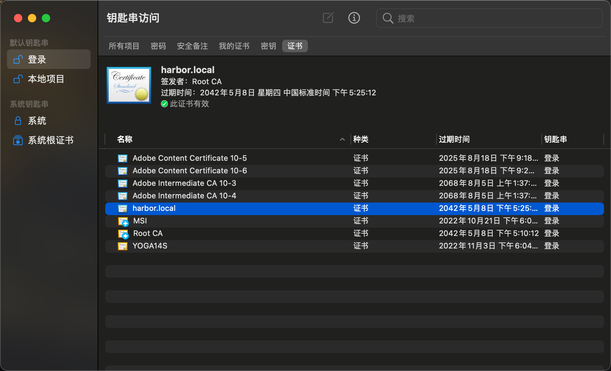

使用OpenSSL创建自签名ecc证书
在搭建服务时，时不时需要使用https证书。而内网环境最好是使用自签名证书，便于管理。
至于为什么要生成ECC证书而不是用RSA证书：ECC证书相对于RSA证书来说，体积小且速度快，而且内网使用不需要考虑兼容性。
本文主要介绍如何使用OpenSSL创建自签名ecc证书。
关键词：openssl，https
准备工作
- Mac mini
- LibreSSL 2.8.3
这里还需要修改一下openssl的默认配置，使其可以生成版本v3的证书：
生成CA根证书
为什么要使用CA根证书呢？
使用自定义CA签发本地使用的https证书，便于管理：只需要把导入CA根证书，主机就可以正常使用自签名的证书。
生成CA根证书的私钥
1 | openssl ecparam -genkey -name prime256v1 -out ca.key |
生成CA根证书
1 | openssl req -new -x509 -subj "/C=CN/CN=Root\ CA" -days 7305 -key ca.key -out ca.crt -extensions v3_ca |
这里的C=CN指的是国别代码，CN=Root CA的含义是CA根证书的名称是Root CA。
查看根证书详细信息
1 | openssl x509 -in ca.crt -text -noout |
生成域名证书
生成域名证书的私钥
1 | openssl ecparam -genkey -name prime256v1 -out harbor.key |
生成域名证书签名请求CSR
1 | openssl req -new -sha256 -subj "/C=CN/CN=harbor.local" -key harbor.key -out harbor.local.csr |
生成域名证书
1 | openssl x509 -req -days 7305 -sha256 -CA ca.crt -CAkey ca.key -CAcreateserial -in harbor.local.csr -out harbor.crt -extensions v3_ca |
查看域名证书详细信息
1 | openssl x509 -in harbor.crt -text -noout |
此时发现生成的证书版本并不是V3，需要一些信息修正。
创建v3.ext文件，输入以下内容
1 | authorityKeyIdentifier=keyid,issuer |
再次生成域名证书
1 | openssl x509 -req -days 7305 -sha256 -CA ca.crt -CAkey ca.key -CAcreateserial -in harbor.local.csr -out harbor.crt -extfile v3.ext |
再次查看生成域名证书的详细信息
1 | openssl x509 -in harbor.crt -text -noout |
此时成功创建版本v3的ecc域名证书。
导入CA证书
Mac OS
- 打开钥匙串，找到证书
- 将需要导入的CA证书移动到空白处，此时会发现证书未被信任
- 右键此证书，查看简介，选择信任，修改选项使用此证书为始终信任
- 在钥匙串打开该CA签发域名证书的证书，会发现域名证书已经被信任。

Windows
- 右键需要导入的根证书，选择安装，选择导入本地计算机
- 选择将证书放入下列存储，选择受信任的证书颁发机构
- 完成向导
- 右键该CA签发的证书，此时发现证书没有问题。
Linux
大部分情况下我们都是在Linux系统上操作导入根证书的。
这里以Ubuntu为例
在目录
/usr/share/ca-certificates下创建一个存放额外证书的文件夹1
sudo mkdir -p /usr/share/ca-certificates/local
拷贝证书到证书文件夹
1
sudo cp ca.crt /usr/share/ca-certificates/local/
执行以下命令
1
sudo dpkg-reconfigure ca-certificates


选择yes，然后会提示选择证书，敲一下回车，ca证书就被选中
导入成功